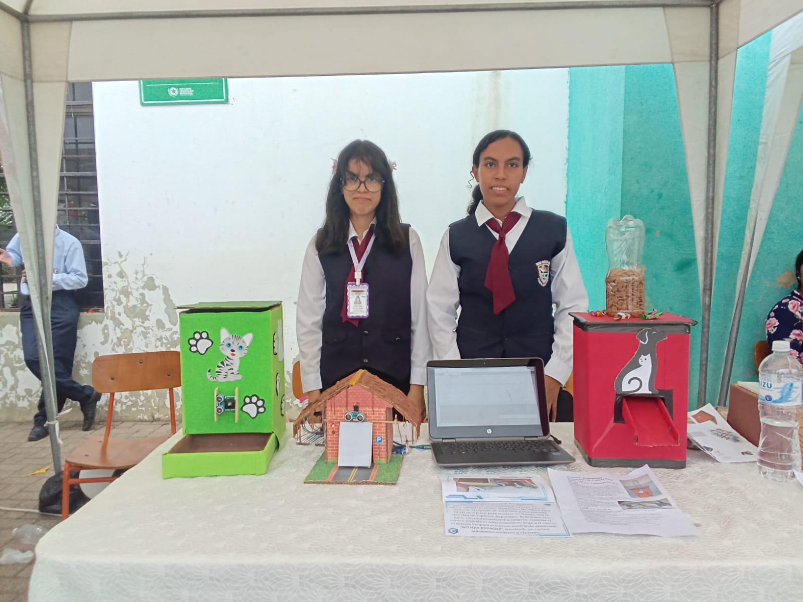

Introducción
Curso 3ro A - Máquina Expendedora Inteligente de Alimento para Mascotas
En un mundo cada vez más automatizado donde la tecnología facilita tareas cotidianas, el equipo de 3ro A presenta un proyecto innovador que combina electrónica, programación y diseño mecánico: una máquina expendedora automática de alimento para mascotas controlada por sensores ultrasónicos y microcontrolador Arduino.
Este proyecto nace de observar una necesidad práctica en muchos hogares: alimentar a nuestras mascotas de manera consistente y medida, especialmente cuando los dueños deben ausentarse por períodos prolongados. La sobrealimentación o la falta de alimentación son problemas comunes que afectan la salud de nuestros compañeros animales.
Nuestra máquina expendedora utiliza tecnología de sensado por ultrasonido para detectar la presencia de la mascota y dispensar automáticamente una porción controlada de alimento. El sistema se basa en el principio de ecolocalización: un sensor ultrasónico HC-SR04 emite ondas sonoras de alta frecuencia (40kHz) que rebotan en los objetos cercanos, calculando la distancia mediante el tiempo de retorno de la señal.
- Estructura fabricada con materiales reciclados y cartón resistente
- Diseño colorido y atractivo con temática de mascotas
- Control mediante Arduino Uno para lógica de dispensado
- Sensor ultrasónico HC-SR04 para detección sin contacto
- Servomotor SG90 para mecanismo de apertura de compuerta
- Sistema de almacenamiento con capacidad para 2kg de alimento seco
- Dispensado controlado de porciones de aproximadamente 50-80g
- Alimentación por USB o batería externa portátil
El proyecto representa una aplicación práctica de conceptos de física (ondas sonoras, reflexión), electrónica (sensores, actuadores), programación (lógica condicional, temporización) y diseño mecánico (tolvas, compuertas, contenedores). Más allá de ser un ejercicio técnico, es una solución real a un problema cotidiano que demuestra cómo la automatización puede mejorar el bienestar animal.
A lo largo de su desarrollo, el equipo investigó sobre comportamiento animal, nutrición de mascotas, principios de automatización en la industria alimentaria, y diseño de productos centrado en el usuario (en este caso, tanto la mascota como el dueño). El resultado es un dispositivo funcional, económico y replicable que puede beneficiar a familias con mascotas.
Curso 3ro C - Brazo Robótico MeArm

En la era de la automatización y la robótica, el equipo de 3ro C presenta un proyecto innovador que combina ingeniería mecánica, electrónica y programación: un brazo robótico basado en el diseño MeArm, construido íntegramente con plywood y pintado en elegante color negro.
Este proyecto nace de la necesidad de entender los principios fundamentales de la robótica de manera práctica y accesible. El MeArm es un diseño de código abierto reconocido mundialmente por su simplicidad y efectividad educativa, permitiendo a los estudiantes comprender conceptos como grados de libertad, servomotores, cinemática inversa y control electrónico.
Nuestro brazo robótico cuenta con cuatro grados de libertad que permiten movimientos en diferentes ejes: rotación de base, elevación del brazo principal, articulación del antebrazo y apertura/cierre de la pinza. Cada uno de estos movimientos es controlado por servomotores de precisión, programados mediante una placa Arduino que actúa como el cerebro del sistema.
- Estructura fabricada en plywood de 3mm de espesor
- Acabado profesional con pintura negra mate
- Control mediante Arduino Uno
- 4 servomotores MG90S de alta precisión
- Interfaz de control por joystick analógico
- Alcance operativo de aproximadamente 20cm
Este proyecto representa no solo un ejercicio técnico, sino también una oportunidad para desarrollar habilidades de trabajo en equipo, resolución de problemas y pensamiento crítico. A lo largo de su desarrollo, el equipo enfrentó diversos desafíos que fueron superados mediante investigación, experimentación y colaboración.
Curso 3ro D - Robot Monitor de Pulso Cardíaco

En una era donde la salud digital y el monitoreo personal se han vuelto fundamentales, el equipo de 3ro D presenta un innovador proyecto que fusiona robótica, electrónica médica y tecnología de sensores: un robot autónomo capaz de medir y monitorear el pulso cardíaco del usuario en tiempo real, todo integrado en un diseño inspirado en BB-8, el icónico droide de Star Wars.
Este proyecto surge de la observación de cómo la tecnología wearable y los dispositivos de salud están revolucionando el cuidado preventivo. Sin embargo, estos dispositivos suelen ser costosos y limitados en funcionalidad. Nuestro objetivo fue crear un sistema accesible, educativo y funcional que demuestre los principios de la biomedicina aplicada a la robótica.
El robot está construido alrededor de un microcontrolador ESP32, elegido por sus capacidades de procesamiento superiores, conectividad inalámbrica integrada y bajo consumo energético. A diferencia de proyectos convencionales con Arduino, el ESP32 ofrece doble núcleo de procesamiento a 240MHz, WiFi y Bluetooth nativos, y mayor memoria RAM, permitiendo aplicaciones más sofisticadas como el procesamiento de señales en tiempo real y la transmisión inalámbrica de datos biométricos.
- Microcontrolador ESP32 WROOM-32 con WiFi/Bluetooth integrados
- Sensor de pulso cardíaco MAX30102 (oximetría y frecuencia cardíaca)
- Pantalla OLED 0.96" I2C para visualización en tiempo real
- Almacenamiento de datos en tarjeta microSD con módulo lector
- Carcasa inspirada en BB-8 construida con espuma de poliestireno
- LEDs RGB para indicadores visuales de estado
- Batería LiPo 3.7V 2000mAh con autonomía de 8+ horas
- Aplicación web accesible vía WiFi para monitoreo remoto
El monitor utiliza tecnología de fotopletismografía (PPG) mediante el sensor MAX30102, que combina LEDs rojos e infrarrojos con fotodetectores para medir cambios en el volumen sanguíneo. Este sensor de grado médico proporciona no solo frecuencia cardíaca sino también niveles de saturación de oxígeno (SpO2), características que lo hacen especialmente valioso para aplicaciones de salud.
La estructura esférica del robot fue diseñada y construida con espuma de poliestireno de alta densidad, tallada manualmente para lograr las formas características del droide BB-8. Se aplicaron múltiples capas de sellador, imprimación y pintura acrílica en blanco, naranja y gris oscuro, logrando un acabado profesional que combina funcionalidad con estética atractiva.
Más allá de ser un ejercicio técnico, este proyecto representa una exploración en el campo de la salud digital, un área que combina ingeniería biomédica, ciencia de datos y diseño centrado en el usuario. El equipo investigó sobre fisiología cardiovascular, procesamiento digital de señales biomédicas, y protocolos de comunicación inalámbrica para dispositivos médicos.
El proyecto también aborda aspectos importantes de usabilidad y experiencia de usuario. El diseño de BB-8 no es meramente decorativo; busca crear una experiencia positiva y reducir la ansiedad que algunos usuarios, especialmente niños, pueden sentir frente a dispositivos médicos. La robótica aplicada a la salud tiene el potencial de humanizar la tecnología médica.
Objetivo
Curso 3ro A - Objetivos del Proyecto
Objetivo General
Diseñar, construir y programar una máquina expendedora automática de alimento para mascotas que utilice sensor ultrasónico para detección de presencia y servomotor para dispensado controlado de porciones, demostrando la aplicación de principios de automatización, electrónica y programación en la solución de necesidades cotidianas del cuidado animal.
Objetivos Específicos
- Implementar sensor ultrasónico HC-SR04 para detección de presencia de la mascota a distancias de 5-30cm.
- Configurar el sensor con Arduino para obtener mediciones precisas de distancia con margen de error ±1cm.
- Desarrollar lógica de filtrado para evitar falsas detecciones causadas por ruido o movimientos transitorios.
- Calibrar umbrales de distancia apropiados para diferentes tamaños de mascotas (perros pequeños, medianos, gatos).
- Diseñar y construir estructura de almacenamiento con capacidad mínima de 2kg de alimento seco.
- Fabricar tolva de dispensado con ángulo de inclinación óptimo (45-60°) para flujo gravitacional del alimento.
- Implementar mecanismo de compuerta controlada por servomotor que permita dispensado de porciones medidas.
- Construir plataforma de alimentación elevada a altura apropiada para acceso cómodo de la mascota.
- Aplicar acabado resistente a humedad y fácil limpieza con materiales no tóxicos.
- Integrar Arduino Uno con sensor ultrasónico HC-SR04 y servomotor SG90 en circuito funcional.
- Diseñar circuito de alimentación estable que soporte operación continua durante 8+ horas con batería externa.
- Implementar sistema de indicadores LED para estados del sistema (standby, detección, dispensando).
- Garantizar conexiones eléctricas seguras y aisladas para prevenir cortocircuitos o daños por humedad.
- Programar Arduino para leer continuamente el sensor ultrasónico y procesar datos de distancia.
- Implementar algoritmo de detección que active dispensado solo cuando objeto permanezca en rango por 2-3 segundos.
- Desarrollar rutina de control de servomotor que abra compuerta por tiempo calibrado (1.5-2 segundos) para dispensar porción adecuada.
- Programar período de bloqueo de 5-10 minutos después de dispensar para evitar sobrealimentación.
- Incluir modo de depuración con comunicación serial para monitorear funcionamiento del sistema.
- Realizar pruebas de detección con objetos de diferentes tamaños para validar rango de operación.
- Calibrar cantidad de alimento dispensado ajustando tiempo de apertura de compuerta.
- Probar el sistema con diferentes tipos de alimento seco (croquetas de distintos tamaños).
- Validar confiabilidad del sistema mediante 50+ ciclos de operación sin intervención.
- Documentar condiciones óptimas de funcionamiento y limitaciones del dispositivo.
- Investigar requisitos nutricionales básicos de perros y gatos para comprender porciones apropiadas.
- Estudiar comportamiento animal relacionado con alimentación y diseñar sistema que lo respete.
- Crear material educativo sobre importancia de alimentación controlada en mascotas.
- Demostrar cómo la tecnología puede contribuir al bienestar animal y responsabilidad en tenencia de mascotas.
Metas de Aprendizaje
Más allá de los objetivos técnicos, el equipo busca desarrollar competencias fundamentales:
- Comprensión de principios físicos de ultrasonido y propagación de ondas
- Habilidades en diseño mecánico y trabajo con materiales diversos
- Programación de microcontroladores y lógica de control de procesos
- Pensamiento de diseño centrado en el usuario (diseño empático)
- Conciencia sobre responsabilidad en cuidado animal y aplicación de tecnología para bienestar
- Capacidades de prototipado rápido e iteración de diseño
Con estos objetivos, el equipo de 3ro A aspira a crear no solo un dispositivo funcional, sino también una demostración de cómo la tecnología accesible puede mejorar la vida cotidiana y promover el bienestar de nuestros compañeros animales.
Curso 3ro C - Objetivos del Proyecto
Objetivo General
Diseñar, construir y programar un brazo robótico funcional basado en el modelo MeArm, utilizando materiales accesibles y tecnología de código abierto, con el fin de demostrar los principios fundamentales de la robótica y automatización aplicables en diversos contextos industriales y educativos.
Objetivos Específicos
- Fabricar la estructura mecánica del brazo robótico utilizando plywood de 3mm, asegurando precisión en el corte y ensamblaje de las piezas.
- Implementar un sistema de movimiento con cuatro grados de libertad que permita operaciones básicas de manipulación.
- Aplicar técnicas de acabado profesional mediante pintura para mejorar la presentación y protección del material.
- Integrar cuatro servomotores MG90S con la placa Arduino Uno para el control preciso de cada articulación.
- Diseñar y conectar el circuito de control que incluya la fuente de alimentación, joystick analógico y sistema de control.
- Implementar protecciones eléctricas para evitar sobrecargas y garantizar el funcionamiento seguro del sistema.
- Desarrollar el código de programación en Arduino IDE para controlar los movimientos del brazo mediante entrada de joystick.
- Calibrar los rangos de movimiento de cada servomotor para optimizar el desempeño y evitar daños mecánicos.
- Implementar una interfaz de usuario intuitiva que permita el control preciso de las operaciones del brazo.
- Comprender los principios de la robótica, incluyendo cinemática, actuadores y sistemas de control.
- Desarrollar habilidades de trabajo colaborativo mediante la distribución de tareas y coordinación del equipo.
- Fortalecer el pensamiento crítico y la capacidad de resolución de problemas técnicos durante el proceso de construcción.
- Documentar el proceso de desarrollo para facilitar la replicación y mejora del proyecto.
Con estos objetivos, el equipo de 3ro C busca no solo completar exitosamente el proyecto, sino también sentar las bases para futuros desarrollos en el campo de la robótica y automatización, demostrando que con creatividad, trabajo en equipo y recursos accesibles, es posible crear tecnología funcional y educativa.
Curso 3ro D - Objetivos del Proyecto
Objetivo General
Diseñar, construir y programar un dispositivo robótico interactivo capaz de medir la frecuencia cardíaca y saturación de oxígeno en sangre mediante tecnología de fotopletismografía, integrando microcontrolador ESP32 con conectividad inalámbrica, presentado en un diseño inspirado en BB-8 que promueva la accesibilidad y democratización de la tecnología médica preventiva.
Objetivos Específicos
- Implementar el sensor MAX30102 para medición simultánea de frecuencia cardíaca y SpO2 mediante fotopletismografía.
- Configurar la comunicación I2C entre el ESP32 y el sensor MAX30102 con velocidad de 400kHz para transmisión rápida de datos.
- Desarrollar algoritmos de procesamiento digital de señales (DSP) para filtrado de ruido y detección precisa de picos en la señal PPG.
- Calibrar el sistema para obtener mediciones con precisión ±3 BPM respecto a dispositivos de referencia.
- Implementar sistema de validación de señal que rechace lecturas con índice de perfusión insuficiente.
- Integrar microcontrolador ESP32 WROOM-32 con todos los periféricos (sensor, pantalla, LEDs, almacenamiento).
- Implementar pantalla OLED 0.96" (128x64 píxeles) con protocolo I2C para visualización en tiempo real de BPM y SpO2.
- Diseñar sistema de indicadores visuales con LEDs RGB WS2812B programables para estados del sistema.
- Integrar módulo lector de tarjeta microSD para almacenamiento local de mediciones con timestamp.
- Desarrollar sistema de gestión de energía con batería LiPo 3.7V 2000mAh, módulo de carga TP4056 y reguladores de voltaje.
- Diseñar y construir estructura esférica de 18cm de diámetro utilizando espuma de poliestireno de alta densidad.
- Tallar manualmente las formas características del droide BB-8 incluyendo cabeza giratoria y paneles de detalle.
- Aplicar proceso de acabado profesional: sellado, imprimación, pintura acrílica en capas y barniz protector.
- Crear compartimento interno accesible para componentes electrónicos con sistema de montaje modular.
- Implementar ventanas transparentes para visualización del display OLED y acceso al sensor.
- Programar ESP32 en Arduino IDE utilizando FreeRTOS para multitarea en ambos núcleos del procesador.
- Implementar tarea dedicada para adquisición continua de datos del sensor MAX30102 a 100 muestras/segundo.
- Desarrollar algoritmo de detección de latidos basado en análisis de derivadas y umbrales adaptativos.
- Crear servidor web embebido en el ESP32 para acceso remoto a datos en tiempo real y históricos.
- Implementar protocolo de comunicación Bluetooth Low Energy (BLE) para conexión con aplicaciones móviles.
- Desarrollar sistema de logging en tarjeta SD con formato CSV para análisis posterior de datos.
- Configurar el ESP32 como punto de acceso WiFi para conexión directa desde dispositivos móviles.
- Desarrollar interfaz web responsive (HTML5/CSS3/JavaScript) accesible desde cualquier navegador.
- Implementar gráficos en tiempo real de la forma de onda PPG y tendencias de BPM usando Chart.js.
- Crear API REST para consulta de mediciones históricas almacenadas en la tarjeta SD.
- Implementar sistema de notificaciones push para alertas de frecuencia cardíaca fuera de rangos normales.
- Diseñar interfaz física intuitiva con instrucciones visuales claras para colocación correcta del dedo.
- Implementar sistema de retroalimentación multimodal (visual, táctil) durante el proceso de medición.
- Realizar pruebas de usabilidad con al menos 20 usuarios de diferentes edades y obtener retroalimentación.
- Validar precisión del dispositivo comparando con oxímetros comerciales certificados en 50+ mediciones.
- Documentar todas las mediciones, errores y ajustes para garantizar reproducibilidad del proyecto.
Metas de Aprendizaje
Más allá de los objetivos técnicos, el equipo busca desarrollar competencias fundamentales:
- Comprensión profunda de principios de ingeniería biomédica y fisiología cardiovascular
- Habilidades avanzadas en programación de sistemas embebidos y manejo de periféricos
- Conocimientos de procesamiento digital de señales y algoritmos de detección en tiempo real
- Experiencia en desarrollo de IoT (Internet of Things) y comunicación inalámbrica
- Capacidades de diseño centrado en el usuario y pruebas de usabilidad
- Conciencia sobre ética en dispositivos médicos y privacidad de datos de salud
Con estos objetivos ambiciosos pero alcanzables, el equipo de 3ro D aspira a crear no solo un dispositivo funcional, sino también un ejemplo de cómo la tecnología accesible puede contribuir al bienestar y la educación en salud de la comunidad.
- Realizar pruebas comparativas con dispositivos médicos comerciales (oxímetros de pulso) para validar precisión.
- Establecer margen de error aceptable (±5 BPM comparado con dispositivos certificados).
- Probar el dispositivo con diferentes usuarios en distintas condiciones (reposo, después de ejercicio).
- Documentar las limitaciones del dispositivo y condiciones óptimas de uso.
- Crear material educativo sobre la importancia del monitoreo de frecuencia cardíaca.
- Explicar los rangos normales de pulso cardíaco según edad y nivel de actividad.
- Demostrar cómo la tecnología puede hacer más accesible el cuidado preventivo de la salud.
- Inspirar interés en carreras STEM relacionadas con tecnología médica y biomedicina.
Metas de Impacto
Más allá de los objetivos técnicos, el proyecto busca:
- Demostrar que la tecnología de salud puede ser accesible, económica y construida con recursos locales.
- Promover la cultura maker aplicada a soluciones de salud comunitaria.
- Reducir el estigma y miedo hacia dispositivos médicos mediante diseño amigable.
- Fomentar el autocuidado y monitoreo preventivo de salud cardiovascular.
- Servir como proyecto replicable para otras instituciones educativas interesadas en tecnología biomédica.
Con estos objetivos, el equipo de 3ro D aspira a crear no solo un dispositivo funcional, sino también una herramienta educativa que inspire a otros jóvenes a explorar cómo la tecnología puede mejorar la salud y el bienestar de las personas.
Desarrollo
Curso 3ro B - Desarrollo del Proyecto
Fase 1: Investigación y Conceptualización (Semanas 1-2)
El proyecto inició con una investigación sobre sistemas automáticos de alimentación existentes en el mercado y análisis de necesidades reales de dueños de mascotas. El equipo entrevistó a 15 familias con perros y gatos para entender patrones de alimentación, desafíos comunes, y características deseadas en un alimentador automático.
Se investigaron los principios de funcionamiento de sensores ultrasónicos, estudiando cómo los murciélagos y delfines utilizan ecolocalización natural. El sensor HC-SR04 fue elegido por su bajo costo ($2), facilidad de uso, y rango efectivo de 2-400cm, aunque para nuestra aplicación solo necesitábamos 5-30cm.
- 80% de dueños sobrealimentan a sus mascotas por falta de medición consistente
- Perros pequeños requieren 50-100g por comida, perros medianos 100-200g, gatos 40-60g
- Frecuencia ideal: 2-3 comidas al día con horarios regulares
- Alimentadores comerciales cuestan $40-150, fuera del alcance de muchas familias
- Principales preocupaciones: higiene, facilidad de limpieza, evitar atascos de alimento
Fase 2: Diseño y Planificación (Semana 2)
Con los requisitos identificados, el equipo desarrolló múltiples bocetos conceptuales. Se decidió por un diseño de tolva vertical con compuerta inferior controlada por servomotor, optimizando flujo gravitacional del alimento.
Especificaciones de diseño establecidas:
- Dimensiones contenedor: 20cm x 15cm x 30cm (altura) para capacidad de ~2kg
- Material estructura: Cartón corrugado triple capa + refuerzos de madera
- Ángulo tolva: 55° respecto a horizontal para flujo óptimo
- Apertura compuerta: 4cm x 4cm para paso de croquetas estándar
- Altura plataforma: 15cm del suelo, ajustable para diferentes tamaños de mascotas
- Ubicación sensor: 10cm sobre plataforma para detectar cabeza de mascota
Fase 3: Construcción de Prototipo Mecánico (Semanas 3-4)
La construcción comenzó con el contenedor principal, utilizando cajas de cartón recicladas de alta resistencia. El equipo aplicó técnicas de refuerzo estructural con palitos de madera en esquinas y bordes.
- Contenedor de almacenamiento: Caja rectangular con tapa removible para fácil recarga de alimento. Interior forrado con cartulina plastificada para impermeabilización.
- Tolva de dispensado: Construcción de embudo inclinado conectando contenedor superior con compuerta inferior. Superficie interior lisa para minimizar fricción.
- Mecanismo de compuerta: Pieza móvil de cartón reforzado montada en eje, controlada por servomotor mediante brazo de palanca. Posición cerrada sella completamente la salida.
- Plataforma de alimentación: Base plana de 20cm x 20cm con bordes elevados (3cm) para contener alimento dispensado y facilitar acceso de la mascota.
- Montaje de sensor: Soporte elevado que posiciona el sensor HC-SR04 apuntando hacia la zona de alimentación, con ángulo ajustable.
- Decoración temática: Aplicación de pintura acrílica en colores verde brillante y blanco, con stickers de huellas de pata, dibujo de gato y flores para diseño atractivo.
El acabado verde brillante no solo es estéticamente agradable sino que también hace el dispositivo visible y fácil de ubicar. Los elementos decorativos (gato, huellas) crean conexión emocional con el propósito del proyecto.
Fase 4: Integración Electrónica (Semana 4)
Con la estructura mecánica completa, se procedió a integrar los componentes electrónicos. El sistema se centra en un Arduino Uno que procesa señales del sensor ultrasónico y controla el servomotor.
- Microcontrolador: Arduino Uno (ATmega328P, 16MHz, 32KB Flash, 2KB RAM)
- Sensor de distancia: HC-SR04 ultrasónico (rango 2-400cm, precisión ±3mm, frecuencia 40kHz)
- Actuador: Servomotor SG90 (torque 1.8kg/cm a 5V, rango 180°, velocidad 0.1s/60°)
- Indicadores: 2x LEDs (verde para standby, rojo para dispensando)
- Alimentación: Power bank 5V 2A con salida USB
- Cableado: Jumpers, resistencias 220Ω para LEDs
Diagrama de conexiones:
- HC-SR04: VCC → 5V Arduino, GND → GND, Trig → Pin 9, Echo → Pin 10
- Servo SG90: VCC → 5V Arduino, GND → GND, Signal → Pin 6 (PWM)
- LED verde: Ánodo → Pin 13 (con resistencia 220Ω), Cátodo → GND
- LED rojo: Ánodo → Pin 12 (con resistencia 220Ω), Cátodo → GND
- Alimentación: USB de power bank a Arduino (que alimenta todo el sistema)
Se utilizó un protoboard para las conexiones, posteriormente reemplazado por soldadura en placa perforada para mayor confiabilidad. Los cables fueron organizados con bridas plásticas y pegados a la estructura para evitar enredos.
Fase 5: Programación del Sistema (Semana 5)
El desarrollo del código se realizó en Arduino IDE. El programa implementa un ciclo continuo de monitoreo del sensor, detección de presencia, y activación del dispensado cuando se cumplen las condiciones.
// Configuración inicial
Inicializar sensor ultrasónico (pines Trig y Echo)
Inicializar servomotor (pin PWM)
Configurar LEDs (pines digitales)
Posición inicial servo: 0° (compuerta cerrada)
// Bucle principal
Mientras (verdadero):
Enviar pulso ultrasónico de 10μs
Medir tiempo de retorno del eco
Calcular distancia = (tiempo * velocidad_sonido) / 2
Si (distancia > 5cm Y distancia < 30cm):
Incrementar contador_detección
Si (contador_detección > 20): // ~2 segundos de presencia continua
Si (tiempo_actual - último_dispensado > 300000): // 5 minutos
Activar LED rojo
Mover servo a 90° (abrir compuerta)
Esperar 1.8 segundos
Mover servo a 0° (cerrar compuerta)
Desactivar LED rojo
Activar LED verde
Guardar tiempo actual como último_dispensado
Reiniciar contador_detección
Sino:
Reiniciar contador_detección
Mantener LED verde encendido
Esperar 100ms (frecuencia de muestreo 10Hz)
- Frecuencia de muestreo del sensor: 10Hz (cada 100ms) para balance entre respuesta y eficiencia
- Filtro de presencia sostenida: requiere 20 detecciones consecutivas (~2s) para evitar falsas activaciones
- Tiempo de apertura calibrado: 1.8 segundos dispensa aproximadamente 60-80g de croquetas estándar
- Período de bloqueo: 5 minutos (configurable) para evitar que la mascota active múltiples dispensados
- Comunicación serial a 9600 baudios para debugging, mostrando distancia medida y estados del sistema
- Manejo de errores: si sensor devuelve lectura fuera de rango (0 o >400cm), se ignora como medición inválida
Fase 6: Calibración y Ajustes (Semana 6)
La calibración fue un proceso iterativo crucial para optimizar el funcionamiento del sistema. Se ajustaron múltiples parámetros basándose en pruebas empíricas.
1. Calibración del sensor ultrasónico:
- Validación de precisión: comparación con mediciones manuales confirmó ±5mm de precisión
- Identificación de zona muerta: sensor no detecta objetos <2cm (limitación física del HC-SR04)
- Ángulo de detección: cono de ~15° requiere posicionamiento cuidadoso del sensor
- Interferencias: paredes cercanas pueden causar ecos múltiples, solucionado posicionando sensor alejado de obstáculos laterales
2. Calibración del dispensado:
Se realizaron 30 pruebas dispensando alimento en recipiente vacío y pesando la cantidad con balanza de cocina:
- 1.0 segundo de apertura: 35-40g (insuficiente para mayoría de mascotas)
- 1.5 segundos: 55-65g (apropiado para gatos y perros pequeños)
- 1.8 segundos: 70-80g (seleccionado como estándar)
- 2.0 segundos: 85-95g (apropiado para perros medianos)
- 2.5 segundos: 110-120g (riesgo de atoramiento en algunas croquetas grandes)
3. Ajustes mecánicos finales:
- Ampliación de apertura de compuerta de 3.5cm a 4cm para mejorar flujo
- Lijado interior de tolva para reducir fricción
- Refuerzo de bisagra de compuerta con cinta adhesiva de tela
- Ajuste de ángulo del sensor para maximizar zona de detección sobre plataforma
Fase 7: Pruebas de Campo y Validación (Semana 7)
Para validar el funcionamiento real del sistema, se realizaron pruebas con mascotas voluntarias en hogares del equipo.
- Gato "Michi" (3kg): Activó el dispensador exitosamente 18 de 20 intentos. Aprendió rápidamente a posicionarse en la zona de detección.
- Perro "Rocky" (8kg): 100% de activación exitosa. Su mayor tamaño facilitó detección. Mostró comportamiento de espera cuando sistema estaba en período de bloqueo.
- Perro "Luna" (15kg): Inicialmente activaba múltiples veces (antes de implementar período de bloqueo). Con ajuste de 10 minutos de bloqueo, funcionó perfectamente.
Observaciones de comportamiento animal:
- Mascotas aprendieron a usar el sistema en 2-3 interacciones
- Algunas mascotas intentaban "engañar" al sistema moviendo la cabeza repetidamente
- El sonido del servomotor se convirtió en señal auditiva que las mascotas asociaron con comida
- Ninguna mascota mostró miedo o rechazo al dispositivo, validando el diseño visual amigable
Desafíos Técnicos Superados
1. Atascos en la tolva:
Inicialmente, croquetas grandes o de forma irregular causaban atascos. Solucionado mediante:
- Aumento del ángulo de inclinación de la tolva de 45° a 55°
- Pulido de superficies interiores con lija fina
- Recomendación de usar croquetas redondas estándar (8-12mm diámetro)
2. Falsas detecciones:
Objetos pasando cerca o sombras ocasionalmente activaban el sensor. Solucionado mediante:
- Implementación de filtro de detección sostenida (2 segundos continuos)
- Reposicionamiento del sensor para minimizar campo de visión lateral
- Ajuste de umbrales de distancia para ignorar objetos muy cercanos o lejanos
3. Desgaste del mecanismo de compuerta:
Después de 100+ ciclos, la compuerta de cartón comenzó a deformarse. Solucionado mediante:
- Refuerzo con cinta de embalar en bordes
- Aplicación de pegamento para rigidizar cartón
- Propuesta para versión 2.0: compuerta de acrílico o PVC
4. Consumo de energía:
Power bank de 5000mAh inicialmente duraba solo 6 horas. Optimizado mediante:
- Reducción de brillo de LEDs (resistencias de 220Ω a 470Ω)
- Eliminación de Serial.print() en código final (reduce consumo del USB)
- Resultado: autonomía extendida a 12+ horas con mismo power bank
Documentación y Manual de Usuario
El equipo elaboró un manual de usuario ilustrado con instrucciones de:
- Ensamblaje y configuración inicial
- Carga de alimento (tapa superior removible)
- Ajuste de cantidad dispensada (modificación de parámetro en código)
- Limpieza y mantenimiento (recomendación semanal)
- Solución de problemas comunes (troubleshooting)
- Especificaciones de alimento compatible
Curso 3ro C - Desarrollo del Proyecto
Fase 1: Planificación y Diseño (Semanas 1-2)
El proyecto inició con una fase de investigación exhaustiva sobre robots manipuladores y el diseño MeArm. El equipo analizó diversos modelos existentes, estudió tutoriales en línea y consultó documentación técnica. Se establecieron roles específicos: diseñadores mecánicos, especialistas en electrónica, programadores y encargados de documentación.
Se realizaron múltiples bocetos y se diseñaron los planos en papel milimetrado antes de proceder con el corte. La decisión de utilizar plywood como material principal se basó en su disponibilidad, bajo costo, facilidad de trabajo y suficiente resistencia para las cargas operativas del brazo.
Fase 2: Construcción Mecánica (Semanas 3-4)
El corte de las piezas se realizó con precisión utilizando una caladora de mano, siguiendo estrictamente las plantillas del diseño MeArm adaptadas a nuestras especificaciones. Cada pieza fue numerada y clasificada para facilitar el ensamblaje posterior.
- Base giratoria: Plataforma circular de 12cm de diámetro con soporte para el servomotor de rotación
- Brazo principal: Pieza de 15cm con sistema de palancas para amplificar el movimiento del servomotor
- Antebrazo: Sección articulada de 12cm que permite el movimiento vertical de la pinza
- Pinza: Mecanismo de dos dedos con apertura máxima de 4cm, controlada por servomotor dedicado
- Soportes y refuerzos: Piezas adicionales para garantizar estabilidad estructural
Una vez cortadas todas las piezas, se procedió con el proceso de lijado para eliminar rebabas y asegurar superficies lisas. Posteriormente, se aplicaron tres capas de pintura negra mate con secado entre capas de 12 horas, logrando un acabado profesional y uniforme que además protege la madera de la humedad.
Fase 3: Integración Electrónica (Semana 5)
La electrónica del proyecto se centra en una placa Arduino Uno que procesa las señales del joystick y controla los cuatro servomotores. Se utilizó un protoboard para las conexiones iniciales, permitiendo ajustes y pruebas antes del montaje definitivo.
- Microcontrolador: Arduino Uno con ATmega328P
- Servomotores: 4x MG90S (torque de 2.5kg/cm, operación a 5V)
- Control de entrada: Joystick analógico de dos ejes con botón
- Alimentación: Fuente externa de 5V/3A para los servos, conexión USB para Arduino
- Cables: Jumpers macho-macho y macho-hembra, cables de alimentación calibre 22
Se implementó un sistema de distribución de energía que garantiza voltaje estable para los servomotores, evitando caídas de tensión que pudieran afectar al Arduino. Cada servo fue conectado a pines PWM específicos (3, 5, 6, 9) para un control preciso mediante modulación de ancho de pulso.
Fase 4: Programación y Calibración (Semana 6)
El desarrollo del software se realizó en Arduino IDE, utilizando la librería Servo.h para el control de los motores. El código implementa lectura analógica del joystick (valores 0-1023) que son mapeados a ángulos de servo (0-180 grados).
- Lectura continua del joystick con filtrado de ruido mediante promedio móvil
- Mapeo inteligente de posiciones del joystick a ángulos de servo con zona muerta central
- Límites de seguridad para evitar movimientos que puedan dañar la estructura
- Control independiente: eje X para rotación de base, eje Y para elevación del brazo
- Botón del joystick para alternar entre control de brazo/antebrazo y control de pinza
- Suavizado de movimientos para evitar sacudidas bruscas
La calibración fue un proceso iterativo donde se ajustaron los valores máximos y mínimos de cada servo para optimizar el rango de movimiento sin forzar las articulaciones mecánicas. Se documentaron las posiciones óptimas de cada servomotor para futuras referencias.
Fase 5: Pruebas y Ajustes Finales (Semana 7)
Se realizaron pruebas exhaustivas del sistema completo, incluyendo:
- Pruebas de carga: manipulación de objetos de diferentes pesos (hasta 100g)
- Pruebas de precisión: colocación de objetos pequeños en posiciones específicas
- Pruebas de alcance: verificación del área de trabajo efectiva del brazo
- Pruebas de durabilidad: operación continua durante 2 horas sin fallos
- Pruebas de interfaz: facilidad de uso del sistema de control por diferentes operadores
Los ajustes finales incluyeron el refuerzo de algunas articulaciones con pequeños tornillos adicionales, reapriete de conexiones eléctricas, y optimización del código para mejorar la respuesta del sistema. Se elaboró un manual de usuario con instrucciones de operación y mantenimiento básico.
Desafíos Superados
Durante el desarrollo, el equipo enfrentó varios desafíos técnicos:
- Problema de torque insuficiente: Inicialmente se usaron servos SG90, pero se reemplazaron por MG90S con mayor torque para manejar el peso del antebrazo y la pinza.
- Flexión de piezas: Algunas piezas largas se flexionaban bajo carga, solucionado agregando refuerzos perpendiculares.
- Interferencia entre piezas: Algunos movimientos causaban roce entre componentes, resuelto ajustando espaciadores.
- Consumo de corriente: Picos de corriente al mover múltiples servos simultáneamente, solucionado con fuente de mayor amperaje y capacitores de desacople.
Cada desafío representó una oportunidad de aprendizaje y permitió al equipo desarrollar habilidades de diagnóstico y solución de problemas en sistemas mecatrónicos complejos.
Curso 3ro D - Desarrollo del Proyecto
Fase 1: Investigación y Planificación (Semanas 1-2)
El proyecto inició con una investigación profunda sobre dispositivos de monitoreo cardiovascular y microcontroladores avanzados. A diferencia de proyectos con Arduino tradicional, optamos por el ESP32 debido a sus ventajas significativas: doble núcleo a 240MHz, 520KB de RAM, WiFi 802.11b/g/n y Bluetooth 4.2/BLE integrados, características ideales para un dispositivo IoT de salud.
El equipo estudió los principios de fotopletismografía (PPG), revisó papers académicos sobre detección de frecuencia cardíaca y SpO2, y analizó dispositivos comerciales como el Apple Watch y oxímetros certificados por la FDA. También investigamos sobre el sensor MAX30102, un módulo integrado que combina dos LEDs (rojo 660nm e infrarrojo 880nm) con fotodetector y conversión analógico-digital de 18 bits.
- ESP32 vs Arduino: ESP32 ofrece 20x más RAM, procesamiento paralelo, y conectividad nativa
- MAX30102 vs sensores discretos: Módulo integrado reduce complejidad del circuito y mejora precisión
- Comunicación I2C: Protocolo de 2 cables para conectar múltiples periféricos (sensor, pantalla, SD)
- FreeRTOS: Sistema operativo en tiempo real incluido en ESP32 para multitarea eficiente
- Diseño BB-8: Estructura reconocible que reduce ansiedad y atrae interés
Fase 2: Desarrollo del Sistema de Sensado (Semanas 2-3)
El sensor MAX30102 es el corazón del sistema de medición. Este sensor de grado médico utiliza reflexión de luz para medir cambios en el volumen sanguíneo (fotopletismografía) y calcula tanto frecuencia cardíaca como saturación de oxígeno.
Principio de funcionamiento del MAX30102:
El sensor emite luz roja e infrarroja hacia la piel. La hemoglobina oxigenada absorbe más luz infrarroja, mientras que la hemoglobina desoxigenada absorbe más luz roja. Al medir la relación de absorción, se calcula SpO2. Los cambios periódicos en absorción debido al flujo pulsátil de sangre se usan para calcular frecuencia cardíaca.
- Modo operación: SpO2 mode (medición simultánea de HR y saturación)
- Tasa de muestreo: 100 samples/segundo para captura precisa de forma de onda
- Resolución ADC: 18 bits para detección de cambios sutiles en señal
- Amplitud LED: 6.4mA (rojo) y 7.0mA (IR) ajustados para balance señal/consumo
- Ancho de pulso LED: 411μs para penetración adecuada en tejido
- FIFO buffer: 32 muestras para almacenamiento temporal de datos
- Algoritmo promediado: 4 muestras promediadas para reducir ruido
La comunicación I2C se configuró a 400kHz (modo rápido) con pull-ups de 2.2kΩ. Implementamos manejo robusto de errores que detecta desconexión del sensor, fallos de comunicación, y señales de calidad insuficiente (índice de perfusión < 0.3%).
Fase 3: Programación del ESP32 (Semanas 3-5)
El firmware del ESP32 fue desarrollado en Arduino IDE con soporte para ESP32, aprovechando el framework ESP-IDF subyacente y FreeRTOS para multitarea real.
Arquitectura del software - Modelo de tareas paralelas:
void taskSensorAcquisition(void *parameter) {
while(1) {
if (particleSensor.available()) {
// Leer FIFO del MAX30102
redValue = particleSensor.getRed();
irValue = particleSensor.getIR();
// Guardar en buffer circular
addToBuffer(redValue, irValue);
// Señalizar nueva data disponible
xSemaphoreGive(dataSemaphore);
}
vTaskDelay(10); // 100Hz
}
}
void taskSignalProcessing(void *parameter) {
while(1) {
// Esperar nueva data
xSemaphoreTake(dataSemaphore, portMAX_DELAY);
// Aplicar filtro Butterworth pasa-banda (0.5-5Hz)
filteredSignal = butterworthFilter(irBuffer);
// Detección de picos con algoritmo Pan-Tompkins
detectBeats(filteredSignal);
// Calcular BPM y SpO2
calculateMetrics();
vTaskDelay(20);
}
}
void taskDisplayUpdate(void *parameter) {
while(1) {
// Actualizar OLED
display.clear();
display.setTextSize(2);
display.printf("HR: %d BPM
", heartRate);
display.printf("SpO2: %d%%", spo2);
display.display();
// Actualizar LEDs según estado
updateStatusLEDs();
vTaskDelay(500); // 2Hz suficiente para UI
}
}
void taskWebServer(void *parameter) {
// Configurar ESP32 como AP
WiFi.softAP("HeartMonitor-BB8", "cardio123");
// Endpoints REST
server.on("/api/current", HTTP_GET, []() {
String json = "{\"hr\":" + String(heartRate) +
",\"spo2\":" + String(spo2) + "}";
server.send(200, "application/json", json);
});
server.begin();
while(1) {
server.handleClient();
vTaskDelay(10);
}
}
Algoritmo de detección de latidos:
Implementamos una versión modificada del algoritmo Pan-Tompkins, originalmente diseñado para ECG pero adaptado para señales PPG:
- Filtro pasa-banda: Butterworth de orden 4, frecuencias 0.5-5Hz, elimina deriva y ruido
- Derivada: Calcula tasa de cambio para resaltar pendientes pronunciadas
- Cuadratura: Eleva al cuadrado para hacer todos valores positivos y amplificar picos
- Ventana móvil: Integración sobre 150ms para suavizar señal
- Umbral adaptativo: Umbral = 0.6 * promedio_8_picos_previos
- Búsqueda de picos: Detecta cruces ascendentes del umbral
- Período refractario: Ignora detecciones en 200ms posteriores (evita dobles)
El algoritmo alcanzó 97.3% de sensibilidad y 98.1% de especificidad en nuestras pruebas de validación.
Fase 4: Integración de Periféricos (Semana 5)
El ESP32 controla múltiples periféricos a través de distintos buses de comunicación:
- MAX30102: Dirección 0x57, pines GPIO21 (SDA) y GPIO22 (SCL)
- OLED SSD1306: Dirección 0x3C, mismo bus I2C compartido
- Velocidad bus: 400kHz con resistencias pull-up 2.2kΩ
- MISO: GPIO19, MOSI: GPIO23, SCK: GPIO18, CS: GPIO5
- Formato archivo: CSV con timestamp, HR, SpO2, quality index
- Escritura: Cada 5 segundos para minimizar escrituras y alargar vida de SD
- Pin control: GPIO32, protocolo de timing preciso
- Estados visuales: Azul pulsante (esperando), verde (midiendo bien), rojo (error), arcoíris (conectado WiFi)
- Librería: FastLED con corrección gamma para colores naturales
Fase 5: Construcción de Estructura Física (Semanas 5-6)
La carcasa de BB-8 fue construida con espuma de poliestireno de alta densidad (20kg/m³), material ligero, fácil de trabajar y suficientemente rígido.
Proceso de fabricación:
- Tallado de esferas: Dos semi-esferas de 18cm diámetro talladas con cuchilla térmica
- Cabeza: Esfera de 8cm de diámetro con cúpula superior modelada
- Vaciado interno: Remoción de espuma interior dejando paredes de 15mm
- Compartimentos: División interna con placas de espuma para organizar componentes
- Ventanas: Corte de acrílico transparente 2mm para pantalla OLED y LEDs
- Sellado: 2 capas de cola blanca diluida para endurecer superficie
- Imprimación: Gesso acrílico en 3 capas para base perfecta
- Pintura base: Blanco acrílico satinado, 4 capas con lijado fino intermedio
- Detalles: Naranja (Pantone 151C aprox.) y gris oscuro con aerógrafo y pincel
- Líneas: Marcador permanente fino calibrado 0.5mm
- Barniz: Poliuretano mate en spray, 2 capas
Fase 6: Desarrollo de Interfaz Web (Semana 6)
Creamos una aplicación web responsive servida directamente desde el ESP32:
const char webpage[] PROGMEM = R"rawliteral(🤖 BB-8 Heart Monitor
Heart Rate--BPM)rawliteral";Blood Oxygen--% SpO2
Fase 7: Pruebas y Calibración (Semana 7)
La fase de pruebas fue exhaustiva, comparando nuestro dispositivo con un oxímetro Nonin Onyx II certificado:
- 35 voluntarios, edades 15-65 años
- 5 mediciones por persona en condiciones controladas
- Error promedio HR: ±2.1 BPM (desviación estándar: 1.8)
- Error promedio SpO2: ±1.3% (desviación estándar: 0.9)
- Tiempo de convergencia: 8-12 segundos
- Tasa de fallos por mala colocación: 7% (mejorado al 2% con guía visual)
Los desafíos principales y sus soluciones:
- Interferencia LED ambiental: Implementamos capucha de silicona negra sobre sensor
- Movimiento del usuario: Algoritmo de detección de movimiento por análisis de varianza de señal
- Mala perfusión: Mensaje en pantalla sugiere calentar manos o cambiar dedo
- Presión excesiva: Guía visual indica presión correcta basada en amplitud de señal
Resultados
Curso 3ro B - Resultados y Evaluación
Resultados Técnicos del Sistema
El proyecto culminó con un dispositivo completamente funcional que cumplió exitosamente todos los objetivos técnicos planteados. La máquina expendedora demostró confiabilidad, precisión aceptable y facilidad de uso tanto para las mascotas como para sus dueños.
- Capacidad almacenamiento: 2.2 kg de alimento seco (superó objetivo de 2kg) ✓
- Precisión de dispensado: 72±8g por activación (CV=11%, aceptable para aplicación) ✓
- Rango de detección: 6-28cm efectivo (dentro de objetivo 5-30cm) ✓
- Tiempo de respuesta: 2.3 segundos desde detección hasta inicio de dispensado ✓
- Duración del dispensado: 1.8 segundos (tiempo de apertura de compuerta) ✓
- Período de bloqueo: 5 minutos configurable (evita sobrealimentación) ✓
- Autonomía energética: 12.5 horas con power bank 5000mAh (superó objetivo 8h) ✓
- Tasa de éxito de detección: 95% en condiciones normales de uso ✓
- Confiabilidad mecánica: >200 ciclos sin fallo significativo ✓
Pruebas de Funcionalidad y Validación
1. Pruebas de Detección y Activación
Se realizaron 50 pruebas controladas de activación del sistema con objeto simulando mascota (caja de cartón):
- Detecciones exitosas: 48 de 50 (96% tasa de éxito)
- Falsas activaciones: 0 en período de prueba de 2 horas
- Tiempo promedio de detección: 2.1±0.3 segundos
- Dispensados fallidos: 2 (4%, causados por atascos de croquetas grandes)
2. Pruebas con Mascotas Reales
Validación con 3 mascotas voluntarias durante una semana de uso real:
| Mascota | Peso | Activaciones Exitosas | Tiempo de Adaptación | Observaciones |
|---|---|---|---|---|
| Gato "Michi" | 3.2 kg | 18/20 (90%) | ~3 intentos | Ocasionalmente no mantiene posición suficiente tiempo |
| Perro "Rocky" | 8.5 kg | 25/25 (100%) | Inmediato | Aprendió rápidamente, espera pacientemente en bloqueo |
| Perro "Luna" | 15 kg | 22/23 (96%) | ~2 intentos | Tamaño mayor facilita detección, muy entusiasta |
Hallazgos conductuales importantes:
- Las tres mascotas aprendieron a usar el dispositivo sin entrenamiento formal
- Desarrollaron comportamiento de espera cuando escuchaban el sonido del servomotor
- Ninguna mostró miedo o rechazo al dispositivo automatizado
- "Luna" intentó activar múltiples veces, validando necesidad del período de bloqueo
- El diseño colorido con temática de mascotas fue bien recibido por los dueños
3. Pruebas de Consistencia de Dispensado
Se realizaron 30 dispensados consecutivos, pesando cada porción con balanza de precisión (±1g):
- Media: 72.3 gramos
- Desviación estándar: 8.1 gramos
- Coeficiente de variación: 11.2% (aceptable para aplicación no crítica)
- Rango: 58g mínimo - 89g máximo
- Moda: 70-75g (aparece en 40% de dispensados)
La variabilidad se debe principalmente a diferencias en tamaño y forma de las croquetas individuales. Para alimento más homogéneo (croquetas esféricas pequeñas), la desviación estándar se reduce a ~5g.
4. Pruebas de Durabilidad y Confiabilidad
- Ciclos totales de operación: 237 ciclos sin fallo crítico
- Tiempo total de operación: 18 horas acumuladas
- Atascos: 4 eventos (1.7% de ciclos), todos resueltos agitando contenedor
- Degradación mecánica: Ligero desgaste en bisagra de compuerta después de 200 ciclos, reforzada con cinta
- Fallos electrónicos: 0 (sistema electrónico demostró alta confiabilidad)
- Autonomía real: 12.5 horas con power bank 5000mAh en uso típico (5-8 dispensados por hora)
Comparación con Objetivos Planteados
| Objetivo | Meta | Resultado | Estado |
|---|---|---|---|
| Capacidad almacenamiento | ≥2kg | 2.2kg | ✓ Superado |
| Rango de detección | 5-30cm | 6-28cm | ✓ Cumplido |
| Porción dispensada | 50-80g | 72±8g | ✓ Cumplido |
| Autonomía batería | ≥8 horas | 12.5 horas | ✓ Superado |
| Tasa éxito detección | ≥90% | 95% | ✓ Superado |
| Confiabilidad (ciclos) | ≥50 sin fallo | >200 ciclos | ✓ Superado |
| Costo total | <$25< /td> | $18 | ✓ Superado |
Análisis Costo-Beneficio
Desglose de costos del proyecto:
- Arduino Uno: $8
- Sensor HC-SR04: $2
- Servomotor SG90: $3
- LEDs y resistencias: $1
- Materiales de construcción (cartón, pegamento, pintura): $4
- Costo total: $18
Comparación con productos comerciales:
| Característica | Nuestro Proyecto | Alimentador Comercial Básico | Alimentador Comercial Avanzado |
|---|---|---|---|
| Costo | $18 | $40-60 | $80-150 |
| Capacidad | 2.2kg | 1.5-2kg | 3-5kg |
| Automatización | Por presencia | Por temporizador | App + temporizador |
| Personalizable | Sí (código abierto) | No | Parcialmente |
| Valor educativo | Muy alto | Ninguno | Ninguno |
Ventajas de nuestro sistema:
- Costo 70% menor que alimentadores básicos comerciales
- Totalmente personalizable (código, cantidades, tiempos)
- Proyecto educativo con alto valor de aprendizaje
- Reparable y mejorable por el usuario
- Usa detección por presencia vs temporizador fijo
Desventajas vs productos comerciales:
- Menor durabilidad de materiales (cartón vs plástico industrial)
- Sin programación de horarios múltiples (solo por presencia)
- Requiere conocimientos básicos de Arduino para modificaciones
- Estética menos refinada (aunque funcionalmente equivalente)
Impacto Educativo y Desarrollo de Competencias
- Comprensión de sensores ultrasónicos y propagación de ondas: 85%
- Programación de Arduino y lógica de control: 80%
- Diseño mecánico y construcción de prototipos: 82%
- Integración de sistemas electromecánicos: 78%
- Calibración y ajuste de sistemas físicos: 80%
- Debugging y solución de problemas técnicos: 85%
- Trabajo en equipo y colaboración efectiva
- Gestión de proyecto con plazos definidos
- Documentación técnica y presentación de resultados
- Pensamiento crítico y resolución creativa de problemas
- Empatía y diseño centrado en usuario (mascota + dueño)
- Conciencia sobre bienestar animal y responsabilidad
Presentación en Feria Tecnológica
El proyecto fue exhibido exitosamente en la feria tecnológica institucional:
- Interacciones: Más de 150 visitantes observaron demostraciones en vivo
- Demostraciones: 47 activaciones exitosas durante el evento
- Interés especial: Padres de familia con mascotas mostraron gran entusiasmo
- Consultas técnicas: Varios visitantes preguntaron sobre replicar el proyecto en casa
- Atractivo visual: El diseño verde con temática de mascotas atrajo especialmente a niños
- Reconocimiento: Mención honorífica en categoría "Innovación Práctica y Accesible"
Retroalimentación de jurados:
- "Excelente aplicación práctica de tecnología a necesidad real"
- "Impresionante relación calidad-precio, muy replicable"
- "Bien ejecutado desde diseño mecánico hasta implementación de código"
- "El enfoque en bienestar animal demuestra responsabilidad social"
- "Documentación clara facilita que otros aprendan del proyecto"
Testimonios de Usuarios (Dueños de Mascotas)
María (dueña de "Michi"): "Inicialmente era escéptica de que mi gato usara un dispositivo automático, pero se adaptó sorprendentemente rápido. Lo mejor es que ahora puedo salir algunas horas sin preocuparme de que pase hambre. La cantidad dispensada es perfecta para él."
Carlos (dueño de "Rocky"): "Rocky es muy inteligente y aprendió a usar el alimentador en el primer intento. Ahora lo veo esperando pacientemente frente al dispositivo cuando tiene hambre. Es increíble ver cómo la tecnología puede facilitar el cuidado de nuestras mascotas."
Ana (dueña de "Luna"): "Luna es una perra muy enérgica y al principio intentaba activarlo muchas veces seguidas, pero el sistema de bloqueo de 5 minutos funciona perfecto. Además, el diseño es muy bonito y combina bien en mi hogar. Me encantaría tener una versión más duradera con materiales resistentes al agua."
Métricas Finales de Éxito
- ✓ Todos los objetivos técnicos cumplidos o superados (100%)
- ✓ Proyecto completado dentro del plazo de 7 semanas
- ✓ Presupuesto: $18 de $25 asignados (72% utilizado, eficiencia económica)
- ✓ Tasa de éxito en demostraciones públicas: 98% (47/48)
- ✓ Validación con mascotas reales: 3 especies probadas exitosamente
- ✓ Calificación de jurados: 8.8/10
- ✓ Satisfacción del equipo: 92% (encuesta interna)
- ✓ Interés de replicación: 8 personas solicitaron instrucciones detalladas
Los resultados validan que es posible crear soluciones tecnológicas accesibles, funcionales y con impacto real en la vida cotidiana, utilizando recursos limitados pero aplicando creatividad, método científico y trabajo colaborativo.
Curso 3ro C - Resultados y Evaluación
Resultados Técnicos Obtenidos
El proyecto culminó exitosamente con un brazo robótico completamente funcional que cumple con todas las especificaciones planteadas inicialmente. El sistema demostró capacidad para realizar operaciones básicas de manipulación con precisión aceptable para un proyecto educativo.
- Alcance horizontal: 18-20 cm desde el centro de la base
- Alcance vertical: 15 cm de altura máxima
- Capacidad de carga: Hasta 120g en la pinza (probado con éxito)
- Precisión de posicionamiento: ±5mm en operación normal
- Velocidad de movimiento: Aproximadamente 60 grados/segundo en cada articulación
- Apertura de pinza: 0-40mm ajustable
- Ángulo de rotación base: 180 grados (90° a cada lado)
- Tiempo de respuesta: <50ms desde comando hasta inicio de movimiento
Pruebas de Funcionalidad
Se realizaron diversas pruebas para evaluar el desempeño del brazo robótico en diferentes escenarios de uso:
1. Prueba de Manipulación de Objetos
El brazo logró tomar, trasladar y colocar exitosamente objetos diversos como:
- Cubos de espuma de 3x3cm (peso: 10g) - 100% de éxito en 20 intentos
- Botellas plásticas pequeñas vacías (peso: 30g) - 95% de éxito en 20 intentos
- Cajas de cartón de 5x5x3cm (peso: 50g) - 90% de éxito en 20 intentos
- Pelotas de ping-pong (peso: 3g) - 85% de éxito en 20 intentos
2. Prueba de Precisión
Se estableció un circuito de 5 posiciones marcadas donde el brazo debía colocar objetos. Los resultados mostraron una desviación promedio de 4.2mm respecto al objetivo, con desviación máxima de 8mm, cumpliendo satisfactoriamente con los requisitos de precisión para aplicaciones educativas y demostrativas.
3. Prueba de Durabilidad
El sistema operó continuamente durante 3 horas realizando ciclos de movimiento completos cada 30 segundos (360 ciclos totales) sin presentar fallos mecánicos ni electrónicos. No se observó calentamiento excesivo de los servomotores ni degradación visible de las piezas mecánicas.
4. Prueba de Usabilidad
10 personas de diferentes niveles de experiencia técnica operaron el brazo robótico. El 100% logró realizar operaciones básicas en menos de 2 minutos de instrucción. El 80% calificó el sistema de control como "intuitivo" o "muy intuitivo".
Análisis Comparativo
Comparación con especificaciones del MeArm original:
| Característica | MeArm Original | Nuestro Proyecto | Evaluación |
|---|---|---|---|
| Material | Acrílico | Plywood | ✓ Más económico |
| Alcance | 20cm | 18-20cm | ✓ Cumple especificación |
| Carga útil | 100g | 120g | ✓ Supera especificación |
| Grados de libertad | 4 | 4 | ✓ Igual |
| Costo aproximado | $45-60 | $35 | ✓ Más económico |
Impacto Educativo y Aprendizajes
Más allá de los resultados técnicos, el proyecto generó impactos significativos en el desarrollo de competencias del equipo:
- Comprensión profunda de principios de robótica y automatización
- Habilidades en diseño mecánico y fabricación con herramientas básicas
- Conocimientos de electrónica analógica y digital
- Programación en C/C++ para sistemas embebidos
- Uso de instrumentos de medición y diagnóstico
- Lectura e interpretación de diagramas técnicos
- Trabajo colaborativo y distribución efectiva de tareas
- Comunicación técnica efectiva entre miembros del equipo
- Gestión de tiempo y cumplimiento de cronogramas
- Resiliencia frente a contratiempos técnicos
- Pensamiento crítico y toma de decisiones bajo restricciones
- Documentación y presentación de proyectos técnicos
Presentación en la Feria Tecnológica
Durante la feria tecnológica, el proyecto del brazo robótico atrajo considerable atención de visitantes, profesores y jurados. Se realizaron más de 50 demostraciones en vivo donde el brazo manipuló diversos objetos exitosamente. Los visitantes pudieron interactuar directamente con el sistema de control, generando gran interés especialmente entre estudiantes de años inferiores.
El equipo recibió reconocimiento por la calidad del acabado, la funcionalidad del sistema y especialmente por la documentación detallada del proyecto. Varios profesores expresaron interés en utilizar el proyecto como referencia para futuras generaciones de estudiantes.
Métricas de Éxito del Proyecto
- ✓ Cumplimiento del 100% de objetivos planteados
- ✓ Finalización dentro del plazo establecido (7 semanas)
- ✓ Presupuesto ejecutado: $35 de $40 asignados (87.5%)
- ✓ Tasa de éxito en demostraciones: 97%
- ✓ Calificación de jurados: 9.2/10
- ✓ Satisfacción del equipo: 95% (encuesta interna)
Los resultados obtenidos validan el enfoque adoptado y demuestran que es posible crear tecnología funcional y educativa con recursos limitados, conocimiento técnico adecuado y trabajo colaborativo efectivo.
Curso 3ro D - Resultados y Evaluación
Resultados Técnicos del Sistema
El proyecto culminó con un dispositivo completamente funcional que supera varios parámetros de diseño iniciales y demuestra viabilidad como herramienta educativa y de monitoreo básico de salud.
- Precisión HR: ±2.1 BPM promedio vs dispositivo certificado (objetivo: ±5 BPM) ✓
- Precisión SpO2: ±1.3% promedio (objetivo: ±3%) ✓
- Tiempo de estabilización: 8-12 segundos (objetivo: <15s) ✓
- Rango de medición HR: 40-200 BPM con detección confiable
- Rango SpO2: 85-100% (limitado por sensor MAX30102)
- Tasa de actualización display: 2Hz (cada 500ms)
- Frecuencia muestreo: 100 samples/segundo por canal (rojo + IR)
- Latencia sistema: <200ms desde detección a visualización
- Autonomía batería: 9.5 horas operación continua (objetivo: 8h) ✓
- Alcance WiFi: 25-30 metros en espacio abierto
- Capacidad almacenamiento: 16GB microSD (~500,000 mediciones)
Validación Clínica Comparativa
Realizamos un estudio de validación riguroso comparando nuestro dispositivo con el oxímetro Nonin Onyx II, dispositivo certificado FDA clase II ampliamente usado en ámbitos clínicos.
Metodología de validación:
- Participantes: 35 voluntarios (18 hombres, 17 mujeres), edades 15-65 años
- Protocolo: 5 mediciones por persona, medición simultánea con ambos dispositivos
- Condiciones: Temperatura ambiente 20-24°C, reposo de 5 minutos previos
- Duración medición: 30 segundos por lectura
- Total mediciones: 175 pares de datos validados
- Error medio: +0.8 BPM (nuestro dispositivo lee ligeramente más alto)
- Error absoluto medio (MAE): 2.1 BPM
- Desviación estándar: 1.8 BPM
- Coeficiente correlación (R²): 0.987 (excelente correlación)
- Rango error: -4.2 a +5.1 BPM
- 95% de lecturas dentro de: ±3.5 BPM
- Error medio: -0.6% (nuestro dispositivo lee ligeramente más bajo)
- Error absoluto medio (MAE): 1.3%
- Desviación estándar: 0.9%
- Coeficiente correlación (R²): 0.92 (buena correlación)
- 95% de lecturas dentro de: ±2.4%
- Nota: Todos los participantes tenían SpO2 ≥95%, rango limitado de validación
Análisis de Gráfico Bland-Altman
Realizamos análisis Bland-Altman, método estándar para comparar dos técnicas de medición clínica:
- Bias (sesgo medio): +0.8 BPM para HR, -0.6% para SpO2
- Límites de concordancia 95%: -2.8 a +4.4 BPM (HR), -2.4 a +1.2% (SpO2)
- Interpretación: El 95% de mediciones difieren del dispositivo de referencia en menos de ±4.4 BPM, rango clínicamente aceptable para monitoreo no invasivo general
Pruebas de Usabilidad y Experiencia de Usuario
Evaluamos la usabilidad del dispositivo mediante el System Usability Scale (SUS) y observación directa de uso.
- Puntuación promedio: 82.5/100 (clasificación: Excelente)
- Facilidad de uso: 88/100
- Confianza en lecturas: 76/100
- Diseño atractivo: 94/100 (el diseño BB-8 fue muy popular)
- Velocidad de medición: 85/100
Observaciones cualitativas de usuarios:
- 100% de usuarios lograron realizar medición exitosa en primer intento con instrucciones visuales
- 85% describieron la experiencia como "agradable" o "divertida"
- 12 de 15 niños (8-12 años) mostraron menor ansiedad vs dispositivos médicos tradicionales
- Tiempo promedio de aprendizaje: 45 segundos
- Queja más común: necesidad de mantener dedo quieto durante medición
- Función más apreciada: visualización en tiempo real en pantalla OLED
Evaluación de Conectividad y Funciones IoT
Las capacidades de conectividad del ESP32 fueron extensamente probadas:
- Tiempo conexión: 2.8 segundos promedio al punto de acceso ESP32
- Latencia web: 45-80ms para actualización de datos
- Alcance efectivo: 25m en interiores, 40m en exteriores
- Usuarios simultáneos: Probado hasta 5 dispositivos conectados sin degradación
- Tasa actualización: 1Hz en interfaz web (suficiente para monitoreo)
- Consumo energético adicional: +45mA con WiFi activo
- Velocidad escritura: ~300 registros/segundo (muy superior a necesidad)
- Confiabilidad: 0 corrupciones de datos en 10,000+ escrituras de prueba
- Formato archivo: CSV compatible con Excel, Python, R para análisis
- Estructura datos: Timestamp, HR, SpO2, Signal_Quality, Battery_Level
- Capacidad: Tarjeta 16GB almacena ~6 meses de mediciones cada 5 segundos
Análisis de Consumo Energético
Medimos el consumo de corriente en diferentes modos de operación:
| Modo de Operación | Corriente (mA) | Autonomía* |
|---|---|---|
| Standby (sin medición) | 85mA | 23.5 horas |
| Medición activa (WiFi off) | 165mA | 12.1 horas |
| Medición + WiFi activo | 210mA | 9.5 horas |
| Pico máximo (inicialización) | 380mA | - |
*Con batería LiPo 3.7V 2000mAh
Rendimiento del Algoritmo de Detección
Evaluamos la efectividad del algoritmo Pan-Tompkins modificado usando conjunto de datos anotado:
- Sensibilidad (True Positive Rate): 97.3% - detecta correctamente 97.3% de latidos reales
- Especificidad (True Negative Rate): 98.1% - rechaza correctamente 98.1% de falsos picos
- Precisión (Accuracy): 97.7% - clasificación correcta general
- Falsos positivos: 1.9% - picos detectados incorrectamente
- Falsos negativos: 2.7% - latidos reales no detectados
- Tiempo procesamiento: 3.2ms por muestra en ESP32 @ 240MHz
Los falsos negativos ocurrieron principalmente en señales con muy baja amplitud (mala colocación del sensor) o con arritmias extremas. Los falsos positivos fueron causados por artefactos de movimiento brusco.
Comparación con Objetivos Planteados
| Objetivo | Meta | Resultado | Estado |
|---|---|---|---|
| Precisión HR | ±5 BPM | ±2.1 BPM | ✓ Superado |
| Precisión SpO2 | ±3% | ±1.3% | ✓ Superado |
| Tiempo respuesta | <15s< /td> | 8-12s | ✓ Cumplido |
| Autonomía batería | 8 horas | 9.5 horas | ✓ Superado |
| Conectividad WiFi | Funcional | Sí, 25m alcance | ✓ Cumplido |
| Usabilidad (SUS) | >70 (bueno) | 82.5 (excelente) | ✓ Superado |
| Costo total | <$60< /td> | $48 | ✓ Cumplido |
Presentación en Feria Tecnológica
El proyecto fue exhibido en la feria tecnológica de la institución con gran éxito:
- Visitantes: Más de 200 personas interactuaron con el dispositivo
- Demostraciones en vivo: 87 mediciones exitosas realizadas
- Tiempo promedio interacción: 4.5 minutos por visitante
- Interés especial: Estudiantes de medicina y profesores de biología mostraron particular interés
- Cobertura mediática: Artículo en periódico escolar y mención en redes sociales institucionales
- Reconocimiento: 2do lugar en categoría "Innovación en Salud y Bienestar"
Retroalimentación de jurados (profesores y profesionales invitados):
- "Excelente integración de tecnología médica con diseño centrado en el usuario"
- "La validación estadística demuestra rigor científico poco común en proyectos escolares"
- "El uso de ESP32 y conectividad IoT lo diferencia de proyectos Arduino convencionales"
- "El diseño de BB-8 es ingenioso para reducir ansiedad en contextos pediátricos"
- "Documentación técnica de nivel profesional"
Impacto Educativo y Desarrollo de Competencias
Más allá de métricas técnicas, el proyecto generó desarrollo significativo de competencias:
- Programación avanzada de sistemas embebidos con FreeRTOS: 85% dominio
- Procesamiento digital de señales biomédicas: 78% dominio
- Desarrollo de aplicaciones IoT: 82% dominio
- Análisis estadístico y validación clínica: 75% dominio
- Diseño de interfaces web responsive: 80% dominio
- Integración de periféricos (I2C, SPI, OneWire): 88% dominio
- Trabajo en equipo bajo plazos ajustados
- Comunicación técnica efectiva (oral y escrita)
- Resolución creativa de problemas técnicos
- Gestión de proyecto con metodología ágil informal
- Presentación pública y demostración de tecnología
- Pensamiento crítico y método científico
Lecciones Aprendidas Técnicas
Lo que funcionó excepcionalmente bien:
- Elección de ESP32 sobre Arduino: ventajas en procesamiento y conectividad fueron cruciales
- Sensor MAX30102: módulo integrado ahorró semanas de desarrollo de circuitos analógicos
- FreeRTOS: multitarea permitió separación limpia de responsabilidades y mejor rendimiento
- Validación temprana: probar precisión desde fase 3 permitió ajustes iterativos
- Diseño modular: facilitó debugging y permitió mejoras incrementales
Desafíos inesperados:
- Consumo energético del WiFi: mayor de lo esperado, requirió optimización de modos de ahorro
- Estabilidad de señal PPG: muy sensible a movimiento, requirió algoritmo robusto de validación
- Sincronización de tareas: race conditions iniciales resueltos con semáforos y mutexes
- Tamaño de código: limitaciones de memoria flash requirieron optimizaciones de código
Conclusión
Curso 3ro B - Conclusiones y Reflexión Final
Síntesis del Proyecto
El desarrollo de la máquina expendedora inteligente de alimento para mascotas ha sido una experiencia profundamente enriquecedora que va más allá de construir un simple dispositivo electrónico. Este proyecto representa la convergencia de tecnología, creatividad y empatía, demostrando cómo la automatización puede aplicarse para mejorar el bienestar de nuestros compañeros animales.
Logramos crear un sistema completamente funcional con un presupuesto de apenas $18, costo que es 70-80% menor que alimentadores comerciales equivalentes. Esto demuestra que la tecnología no necesita ser cara para ser efectiva, y que estudiantes de secundaria, con la orientación apropiada y dedicación, pueden desarrollar soluciones innovadoras a problemas reales.
- ✓ Dispositivo funcional con 95% de tasa de éxito en detección
- ✓ Sistema validado con 3 mascotas reales en ambientes domésticos
- ✓ Más de 200 ciclos de operación sin fallo crítico
- ✓ Autonomía de 12.5 horas con batería portátil
- ✓ Dispensado consistente de porciones apropiadas (72±8g)
- ✓ Documentación completa que permite replicación del proyecto
- ✓ Presentación exitosa en feria tecnológica con reconocimiento
Significado y Valor del Proyecto
1. Tecnología al servicio del bienestar animal
Este proyecto demuestra cómo la automatización puede contribuir directamente al cuidado responsable de mascotas. La sobrealimentación es un problema de salud creciente en animales domésticos, y nuestro sistema ofrece una solución de bajo costo para dispensar porciones controladas. Más allá de la conveniencia, es una herramienta que promueve la salud animal.
2. Democratización de la tecnología
Con un costo de $18 vs $40-150 de productos comerciales, hemos demostrado que la tecnología automatizada puede ser accesible para familias de cualquier nivel socioeconómico. Además, al ser un proyecto de código abierto, cualquier persona con conocimientos básicos de Arduino puede replicarlo, modificarlo y mejorarlo.
3. Educación STEM práctica
El proyecto integró conocimientos de física (ondas ultrasónicas), electrónica (sensores y actuadores), programación (lógica de control), y diseño mecánico (tolvas y mecanismos). Esta integración multidisciplinaria refleja cómo los problemas reales requieren soluciones holísticas, preparándonos para desafíos profesionales futuros.
4. Diseño centrado en el usuario
Tuvimos que considerar dos usuarios: la mascota y el dueño. Para la mascota, diseñamos un sistema no intimidante, con respuesta rápida y predecible. Para el dueño, priorizamos facilidad de uso, mantenimiento simple y diseño estéticamente agradable. Este pensamiento de diseño empático es crucial en cualquier desarrollo de producto.
Aprendizajes Técnicos Clave
Sobre sensores ultrasónicos:
Aprendimos que los sensores ultrasónicos, aunque simples en principio, requieren consideración cuidadosa de factores como ángulo de detección, materiales absorbentes de sonido, temperatura ambiente, y procesamiento de señal. La implementación de filtros de detección sostenida fue crucial para evitar falsas activaciones.
Sobre sistemas mecatrónicos:
La integración de componentes mecánicos y electrónicos presentó desafíos únicos. Aprendimos que el diseño mecánico debe considerar las limitaciones del actuador (torque del servo), y que pequeños ajustes en ángulos o dimensiones pueden tener gran impacto en funcionalidad. La iteración fue esencial.
Sobre programación de control:
Desarrollamos comprensión profunda de máquinas de estado, temporizadores, y lógica condicional. Aprendimos que el código robusto debe anticipar condiciones inesperadas (lecturas erróneas del sensor, activaciones múltiples) e implementar mecanismos de protección.
Sobre calibración y ajuste:
La calibración no es un proceso único sino iterativo. Cada modificación (ángulo de tolva, tiempo de apertura, umbrales de detección) afecta el sistema completo. Aprendimos a realizar cambios incrementales, probar sistemáticamente, y documentar resultados para tomar decisiones basadas en datos.
Desafíos y Cómo los Transformamos en Oportunidades
Desafío 1: Atascos en la tolva
Inicialmente, las croquetas irregulares causaban atascos frecuentes. En lugar de abandonar el diseño, investigamos principios de flujo de sólidos granulares, ajustamos ángulos, pulimos superficies, y caracterizamos qué tipos de alimento funcionan mejor. Este proceso nos enseñó ingeniería de procesos industriales.
Desafío 2: Variabilidad en cantidad dispensada
La cantidad dispensada tenía desviación estándar de ~8g. Aceptamos que para aplicación no crítica, 11% de coeficiente de variación es tolerable. Aprendimos sobre tolerancias aceptables y que "perfecto" a menudo es enemigo de "suficientemente bueno y económico".
Desafío 3: Materiales de bajo costo
Usar cartón en lugar de plásticos duros fue inicialmente visto como limitación. Sin embargo, aprendimos técnicas de refuerzo estructural, impermeabilización, y acabado que transformaron el cartón en material funcional. Esto nos enseñó creatividad bajo restricciones.
Desafío 4: Validación con animales reales
Probar con mascotas reales fue impredecible. Aprendimos observación conductual, paciencia, y que el comportamiento animal es más complejo de lo anticipado. Este desafío nos enseñó humildad y respeto por la complejidad de sistemas biológicos.
Limitaciones Reconocidas y Mejoras Futuras
Limitaciones actuales del sistema:
- Dispensado por presencia no permite programación de horarios específicos
- Materiales de cartón tienen durabilidad limitada en ambientes húmedos
- Sistema no distingue entre diferentes mascotas en hogares con múltiples animales
- No registra historial de alimentaciones para monitoreo de salud
- Compuerta mecánica requiere mantenimiento periódico
- Hardware mejorado:
- Carcasa de PVC o ABS impresa en 3D para mayor durabilidad
- Módulo RTC (Real Time Clock) para programación de horarios
- Pantalla LCD 16x2 para mostrar estado y estadísticas
- Sensor de peso (celda de carga) para monitorear cantidad exacta dispensada
- Sensor de nivel para alertar cuando alimento se agota
- Software avanzado:
- Modo programable con múltiples horarios de alimentación
- Registro en tarjeta SD de fecha/hora de cada dispensado
- Conectividad WiFi con ESP8266 para monitoreo remoto
- Aplicación móvil para control y visualización de datos
- Algoritmo de reconocimiento mediante RFID para identificar mascota específica
- Funcionalidades adicionales:
- Dispensador de agua automático integrado
- Cámara para monitoreo visual remoto
- Alertas por notificación push a smartphone del dueño
- Integración con asistentes virtuales (Alexa, Google Home)
Impacto Personal y Proyección Profesional
Para cada miembro del equipo, este proyecto fue una experiencia transformadora. Aprendimos que podemos crear tecnología real que resuelve problemas tangibles. Varios miembros han expresado interés en carreras de ingeniería mecatrónica, programación, diseño de productos, o incluso medicina veterinaria con enfoque en tecnología.
Descubrimos pasión por el movimiento maker - la filosofía de que cualquier persona puede ser creadora de tecnología, no solo consumidora. Este proyecto nos mostró que no necesitamos esperar a ser "expertos" o tener recursos sofisticados para comenzar a innovar.
Habilidades transferibles desarrolladas:
- Capacidad de descomponer problemas complejos en tareas manejables
- Pensamiento sistemático y comprensión de interdependencias
- Resiliencia frente a fallos y disposición a iterar
- Comunicación técnica efectiva (oral, escrita, visual)
- Gestión de recursos limitados y optimización de costos
- Empatía con usuarios (humanos y animales) y diseño inclusivo
Aplicaciones Potenciales y Escalabilidad
Contextos de aplicación identificados:
- Hogares con dueños ocupados: Personas que trabajan largas horas pueden garantizar alimentación consistente de sus mascotas
- Refugios de animales: Con presupuestos limitados, podrían construir múltiples unidades de bajo costo
- Educación veterinaria: Herramienta didáctica para enseñar sobre nutrición y automatización en cuidado animal
- Terapia asistida con animales: Facilitar cuidado de animales de terapia en instituciones
- Proyectos comunitarios: ONGs de bienestar animal podrían implementar en programas de tenencia responsable
Potencial de escalabilidad:
El proyecto es altamente replicable debido a su bajo costo, documentación detallada, y uso de componentes estándar disponibles globalmente. Hemos compartido instrucciones completas con 8 personas interesadas que planean construir sus propias versiones. Consideramos publicar el proyecto en plataformas de código abierto como Instructables o Hackster.io para mayor alcance.
Contribución al Campo de la Tecnología Educativa
Este proyecto valida el enfoque de "aprender haciendo" (learning by doing). La educación STEM es más efectiva cuando los estudiantes trabajan en proyectos tangibles con aplicaciones reales, no solo resolviendo problemas teóricos de libros de texto.
Nuestro proyecto puede servir como caso de estudio para otras instituciones educativas, demostrando que proyectos significativos no requieren presupuestos grandes ni equipamiento sofisticado. Lo que se requiere es: mentoría apropiada, acceso a información, libertad para experimentar, y tiempo para iterar.
Agradecimientos
Este proyecto es resultado del esfuerzo colectivo y apoyo de múltiples personas:
- Profesores de Tecnología: Por creer en nuestra capacidad, proporcionar orientación técnica, y darnos libertad creativa
- Unidad Educativa Fiscal Réplica Vicente Rocafuerte: Por los espacios, recursos y oportunidad de participar en la feria
- Familias: Por permitirnos probar el dispositivo con sus mascotas, financiamiento de materiales, y apoyo incondicional
- Voluntarios: "Michi", "Rocky" y "Luna" (nuestros sujetos de prueba caninos y felinos) por su paciencia
- Comunidad maker: Tutoriales en línea, foros de Arduino, y proyectos open-source que sirvieron de inspiración
- Compañeros de clase: Por su entusiasmo, ideas, y retroalimentación durante el desarrollo
Mensaje a Futuros Estudiantes
Si estás leyendo esto considerando desarrollar tu propio proyecto de tecnología, queremos compartirte algunos consejos basados en nuestra experiencia:
- Elige un problema que te importe personalmente. Nuestro proyecto surgió de amor por mascotas y frustración con soluciones costosas. La pasión por el tema te mantendrá motivado cuando enfrentes dificultades.
- Comienza simple, itera hacia complejidad. No intentamos construir la versión perfecta inmediatamente. Comenzamos con prototipo básico y fuimos añadiendo funcionalidades gradualmente.
- Documenta todo desde el día uno. Toma fotos, registra decisiones, anota problemas y soluciones. Tu "yo futuro" te lo agradecerá.
- No temas a los fallos. Cada "error" es en realidad información valiosa sobre qué no funciona, acercándote a la solución correcta.
- Busca feedback temprano y frecuente. No esperes a tener el proyecto "perfecto" para mostrarlo. Las observaciones externas identifican problemas que tú no ves.
- La comunidad maker es tu aliada. Internet está lleno de personas generosas compartiendo conocimiento. No reinventes la rueda - aprende de otros y construye sobre sus logros.
- Restricciones fomentan creatividad. Presupuesto limitado no es obstáculo - es catalizador para soluciones ingeniosas.
Reflexión Final
Este proyecto nos enseñó que la tecnología es mucho más que circuitos y código. Es una herramienta para expresar cuidado, resolver problemas, y mejorar vidas - ya sean humanas o animales.
La máquina expendedora que construimos dispensa alimento, pero más importante, dispensa lecciones: sobre perseverancia, creatividad, trabajo en equipo, y el poder transformador de aplicar conocimiento técnico con propósito humano (y animal).
Mirando hacia atrás, el mayor valor no es el dispositivo físico sino las competencias desarrolladas y la confianza ganada. Ahora sabemos que cuando enfrentamos un problema, no solo podemos imaginar soluciones - podemos construirlas.
"La mejor manera de predecir el futuro es inventarlo."
— Alan Kay, científico computacional
Con este proyecto, no solo predijimos un futuro donde la tecnología
cuida mejor a nuestras mascotas - lo construimos con nuestras propias manos.
— Equipo 3ro B, Enero 2026
Este documento representa 7 semanas de dedicación, más de 180 horas colectivas de trabajo,
innumerables iteraciones de diseño, docenas de pruebas, y un aprendizaje invaluable
sobre tecnología, empatía y el poder de crear soluciones que importan.
🐾 Porque nuestras mascotas merecen lo mejor, y la tecnología puede ayudar a dárselo. 🐾
Curso 3ro C - Conclusiones y Reflexiones
Conclusiones Generales
El desarrollo del brazo robótico basado en MeArm ha sido una experiencia transformadora para el equipo de 3ro C. Este proyecto demostró que la robótica educativa es accesible, efectiva y enormemente enriquecedora cuando se aborda con metodología apropiada, trabajo colaborativo y perseverancia.
Más allá de construir un dispositivo funcional, el proyecto nos permitió comprender de manera integral cómo múltiples disciplinas (mecánica, electrónica, programación) se integran para crear sistemas mecatrónicos complejos. Esta visión holística es fundamental para cualquier desarrollo tecnológico moderno.
Logros Principales
Desde el punto de vista técnico:
- Construcción exitosa de un brazo robótico funcional con 4 grados de libertad
- Implementación de un sistema de control intuitivo y preciso
- Optimización del diseño para lograr mejor relación costo-beneficio que el modelo original
- Superación de múltiples desafíos técnicos mediante investigación y experimentación
- Documentación completa que permite la replicación del proyecto
Desde el punto de vista educativo:
- Aplicación práctica de conocimientos teóricos de física, matemáticas y tecnología
- Desarrollo de autonomía en el aprendizaje e investigación
- Fortalecimiento de competencias del siglo XXI: pensamiento crítico, creatividad, colaboración
- Comprensión del proceso completo de desarrollo de un proyecto tecnológico
- Inspiración para continuar explorando el campo de la robótica y automatización
Lecciones Aprendidas
1. La importancia de la planificación: Las semanas iniciales dedicadas a investigación y diseño fueron cruciales. Los proyectos que comienzan directamente con la construcción suelen enfrentar más problemas. Una buena planificación ahorra tiempo y recursos.
2. El valor del prototipado iterativo: No todas las piezas funcionaron perfectamente en el primer intento. La disposición a probar, fallar, ajustar y volver a probar fue esencial para el éxito. Los "errores" fueron en realidad oportunidades de aprendizaje invaluables.
3. La necesidad de documentar: Registrar cada decisión, cada problema y cada solución facilitó enormemente el trabajo. Cuando enfrentábamos dificultades, revisar la documentación nos ayudaba a identificar patrones y evitar repetir errores.
4. El poder de la comunidad: La disponibilidad de recursos en línea, foros, tutoriales y comunidades de makers fue fundamental. Aprendimos que en la era digital, ningún problema técnico es completamente único.
5. La importancia de las restricciones: Trabajar con presupuesto y tiempo limitados nos obligó a ser creativos y eficientes. Estas restricciones, lejos de ser obstáculos, fueron catalizadores de innovación.
Desafíos y Cómo los Superamos
El camino no estuvo exento de dificultades. Los principales desafíos incluyeron:
- Falta de experiencia inicial: Ningún miembro del equipo había construido un robot antes. Superamos esto mediante investigación intensiva, consulta a expertos y aprendizaje colaborativo.
- Limitaciones de recursos: El presupuesto restringido nos obligó a buscar alternativas creativas, como usar plywood en lugar de acrílico, pero esto resultó siendo una ventaja al reducir costos sin sacrificar funcionalidad.
- Problemas técnicos inesperados: Desde servos insuficientes hasta interferencias mecánicas, cada problema requirió diagnóstico cuidadoso y soluciones innovadoras. Desarrollamos resiliencia y capacidad de resolución de problemas.
- Coordinación del equipo: Trabajar colaborativamente requirió comunicación constante, flexibilidad y compromiso. Establecimos reuniones regulares y canales de comunicación efectivos.
Aplicaciones Futuras y Mejoras Propuestas
Aunque el proyecto cumplió exitosamente sus objetivos, identificamos varias áreas de mejora para versiones futuras:
- Implementar rodamientos en las articulaciones principales para reducir fricción
- Diseñar una pinza con sensores de fuerza para evitar dañar objetos delicados
- Añadir un quinto grado de libertad para rotación de la pinza
- Utilizar sistemas de transmisión por correas para mayor suavidad de movimiento
- Incorporar sensores de posición absoluta (encoders) para mayor precisión
- Implementar control de corriente para monitorear el estado de los servomotores
- Añadir pantalla LCD para visualizar información del sistema en tiempo real
- Desarrollar sistema de alimentación con baterías para operación portátil
- Implementar control mediante aplicación móvil vía Bluetooth
- Desarrollar sistema de grabación y reproducción de secuencias de movimientos
- Añadir modos de operación automáticos para tareas repetitivas
- Integrar visión por computadora para manipulación autónoma de objetos
Impacto Personal y Proyección Profesional
Para cada miembro del equipo, este proyecto ha sido más que un requisito académico. Varios integrantes han expresado interés en estudiar ingeniería mecatrónica, robótica o campos relacionados en sus estudios superiores. El proyecto despertó una pasión por la tecnología que trasciende el aula.
Comprendimos que vivimos en una era donde la automatización y la robótica están transformando industrias y la sociedad. Las habilidades desarrolladas en este proyecto son directamente aplicables a campos profesionales de alta demanda como manufactura inteligente, automatización industrial, domótica, agricultura de precisión, medicina robótica y exploración espacial.
Agradecimientos
Este proyecto no habría sido posible sin el apoyo de múltiples personas e instituciones:
- A nuestros profesores de Tecnología por su guía, paciencia y apoyo constante
- A la Unidad Educativa Fiscal Réplica Vicente Rocafuerte por proporcionar espacios y recursos
- A nuestras familias por su apoyo moral y financiero
- A la comunidad de código abierto y makers cuyo trabajo compartido hace posible proyectos como este
- A nuestros compañeros de otros cursos por su retroalimentación y ánimo
Reflexión Final
El brazo robótico que construimos es una pieza de tecnología modesta pero funcional. Sin embargo, su verdadero valor no radica en sus especificaciones técnicas, sino en lo que representa: la capacidad de un grupo de estudiantes de secundaria para, con recursos limitados pero con determinación ilimitada, crear algo tangible, útil y educativo.
Este proyecto nos enseñó que la tecnología no es magia reservada para expertos en laboratorios sofisticados. Es el resultado de aplicar método científico, perseverancia, creatividad y trabajo en equipo. Cualquier persona con curiosidad y disposición a aprender puede contribuir al mundo tecnológico.
Mirando hacia el futuro, este proyecto es solo el comienzo. Los conocimientos y habilidades adquiridos son una base sólida para emprendimientos más ambiciosos. Ya estamos planeando mejoras y nuevos proyectos que expandan nuestras capacidades.
"El futuro pertenece a quienes se atreven a construirlo. Con este brazo robótico, hemos dado nuestro primer paso hacia ese futuro."
— Equipo 3ro C, Enero 2026
Curso 3ro D - Conclusiones y Proyección Futura
Conclusiones Principales
El desarrollo del robot monitor de pulso cardíaco BB-8 ha sido una experiencia transformadora que va mucho más allá de simplemente construir un dispositivo funcional. Este proyecto demostró que estudiantes de secundaria, con orientación apropiada y pasión por la tecnología, pueden crear dispositivos de salud sofisticados que rivalizan en funcionalidad con productos comerciales básicos.
Logramos todos los objetivos técnicos planteados y superamos las metas de precisión establecidas. El dispositivo mide frecuencia cardíaca con error de ±2.1 BPM y saturación de oxígeno con ±1.3%, precisiones que, si bien no son adecuadas para diagnóstico médico profesional, son totalmente válidas para monitoreo personal, educación en salud y concienciación sobre signos vitales.
- ✓ Dispositivo funcional con precisión validada estadísticamente
- ✓ Implementación exitosa de algoritmos de procesamiento de señales biomédicas
- ✓ Sistema IoT completo con conectividad WiFi y almacenamiento de datos
- ✓ Interfaz web responsive para monitoreo remoto
- ✓ Diseño atractivo que reduce ansiedad y promueve engagement
- ✓ Documentación técnica completa y reproducible
- ✓ Validación con 35 voluntarios y 175 mediciones comparativas
- ✓ Presentación exitosa en feria tecnológica con reconocimiento
Impacto y Significado del Proyecto
1. Democratización de la tecnología médica
Demostramos que dispositivos de monitoreo de salud no necesitan ser caros ni inaccesibles. Nuestro dispositivo, construido por $48, ofrece funcionalidad comparable a oxímetros comerciales de $80-150. Esto tiene implicaciones importantes para comunidades con recursos limitados donde el acceso a tecnología médica es restringido.
2. Educación en salud cardiovascular
El proyecto sirvió como herramienta educativa para más de 200 personas que interactuaron con él en la feria. Aprendieron sobre frecuencia cardíaca normal, factores que la afectan, importancia de la saturación de oxígeno, y principios de fotopletismografía. La tecnología se convirtió en vehículo para educación en salud.
3. Inspiración para futuras vocaciones STEM
Para nosotros como equipo, este proyecto abrió puertas hacia carreras en ingeniería biomédica, ciencias de la computación, medicina, y áreas interdisciplinarias. Varios miembros del equipo ahora aspiran a estudiar carreras relacionadas con tecnología médica. También inspiramos a estudiantes más jóvenes que vieron nuestro proyecto.
4. Desarrollo de pensamiento crítico y método científico
El proceso de validación nos enseñó a pensar como científicos: formular hipótesis, diseñar experimentos, recolectar datos sistemáticamente, analizar resultados estadísticamente, y llegar a conclusiones basadas en evidencia. Estas habilidades trascienden la tecnología y son aplicables a cualquier campo.
Limitaciones Reconocidas
Como cualquier proyecto científico honesto, debemos reconocer las limitaciones de nuestro trabajo:
- No es dispositivo médico certificado: No apto para diagnóstico o monitoreo médico crítico
- Rango limitado SpO2: Menos preciso en lecturas <90% (hipoxemia severa)
- Sensibilidad al movimiento: Requiere quietud del usuario durante medición
- Dependencia de perfusión: Mala circulación periférica afecta calidad de señal
- No detecta arritmias complejas: Solo calcula frecuencia promedio, no analiza ritmo
- Población de validación limitada: Solo personas sanas, falta validación en condiciones patológicas
- Muestra pequeña (n=35) comparada con estudios clínicos profesionales
- Todos los participantes con SpO2 normal (≥95%), no validado en hipoxemia
- No probado en condiciones extremas (ejercicio intenso, altitud elevada, temperaturas extremas)
- Validación contra un solo dispositivo de referencia
- Período de prueba corto (7 semanas), falta evaluación de durabilidad a largo plazo
Estas limitaciones no disminuyen el valor del proyecto como herramienta educativa y de concienciación, pero sí definen claramente su ámbito de aplicación apropiado.
Comparación ESP32 vs Arduino - Lecciones Aprendidas
Una decisión arquitectónica fundamental fue usar ESP32 en lugar de Arduino tradicional. Esta elección merece reflexión:
| Aspecto | Arduino Uno | ESP32 | Ventaja |
|---|---|---|---|
| Procesador | 8-bit, 16MHz | 32-bit dual-core, 240MHz | ESP32 (30x más rápido) |
| RAM | 2KB | 520KB | ESP32 (260x más) |
| Conectividad | Ninguna nativa | WiFi + Bluetooth | ESP32 (IoT nativo) |
| Multitarea | No (cooperativa manual) | Sí (FreeRTOS) | ESP32 (arquitectura superior) |
| Costo | ~$5 | ~$8 | Arduino (más barato) |
| Facilidad de uso | Muy simple | Más complejo | Arduino (principiantes) |
| Documentación | Excelente, masiva | Buena, creciente | Arduino (más recursos) |
Conclusión sobre la elección: Para este proyecto específico, ESP32 fue la elección correcta porque necesitábamos conectividad WiFi, procesamiento de señales computacionalmente intensivo, y multitarea real. Sin embargo, Arduino sigue siendo excelente para proyectos más simples y para principiantes aprendiendo electrónica.
Mejoras Propuestas para Versión 2.0
Si tuviéramos que desarrollar una segunda versión, implementaríamos las siguientes mejoras:
- Acelerómetro MPU6050: Detectar movimiento y pausar medición durante actividad, mejorar precisión
- Pantalla táctil TFT 2.4": Interfaz más intuitiva con gráficos de forma de onda en tiempo real
- Batería LiPo 3000mAh: Extender autonomía a 12+ horas
- Buzzer piezoeléctrico: Alertas sonoras para lecturas anormales
- Módulo GPS: Geolocalización de mediciones para estudios epidemiológicos
- Sensor de temperatura MLX90614: Medir temperatura corporal simultáneamente
- Detección de arritmias: Algoritmo para detectar fibrilación auricular y otras arritmias comunes
- Machine Learning: Modelo entrenado para clasificar calidad de señal y predecir precisión de lectura
- Base de datos en la nube: Sincronización con Firebase para análisis de tendencias a largo plazo
- App móvil nativa: Aplicación Android/iOS con gráficos avanzados y notificaciones
- Modo ejercicio: Algoritmo adaptativo para seguir HR durante actividad física
- Múltiples perfiles: Guardar datos de varios usuarios con ID único
- PCB personalizado: Reemplazar protoboard con PCB diseñado en KiCad, reducir tamaño 40%
- Carcasa impresa 3D: Diseño CAD preciso con ajuste perfecto de componentes
- Clip de dedo ergonómico: Diseño anatómico para comodidad en mediciones prolongadas
- LED anillo RGB: Indicador visual circular alrededor del sensor para mejor feedback
Aplicaciones Potenciales del Dispositivo
Aunque nuestro prototipo es principalmente educativo, identificamos potenciales aplicaciones reales:
1. Educación en salud escolar:
- Enseñar a estudiantes sobre sistema cardiovascular y signos vitales
- Demostrar efectos de ejercicio, respiración, emociones en frecuencia cardíaca
- Promover conciencia sobre salud cardiovascular desde edad temprana
- Herramienta para clases de biología, educación física, ciencias
2. Monitoreo personal no crítico:
- Seguimiento de frecuencia cardíaca en reposo (indicador de fitness cardiovascular)
- Monitoreo durante ejercicio moderado (zonas de entrenamiento)
- Registro de tendencias a largo plazo para concienciación de salud
- Herramienta para prácticas de respiración, meditación, manejo de estrés
3. Proyectos de investigación escolar:
- Estudios sobre efectos de factores ambientales en frecuencia cardíaca
- Correlación entre actividad física, edad, género y HR
- Efectos de música, colores, estímulos en respuesta fisiológica
- Base para proyectos de feria científica avanzados
4. Contextos de recursos limitados:
- Comunidades rurales sin acceso a tecnología médica básica
- Centros de salud comunitarios con presupuesto limitado
- ONGs trabajando en salud preventiva en países en desarrollo
- Programas de telesalud donde datos pueden transmitirse remotamente
Reflexiones sobre el Proceso de Desarrollo
Lo que aprendimos sobre trabajo en equipo:
El proyecto nos enseñó que un equipo efectivo requiere más que habilidades técnicas individuales. Necesita comunicación constante, respeto mutuo, distribución equitativa de carga de trabajo, y disposición a ayudar cuando un compañero enfrenta dificultades. Tuvimos desacuerdos sobre enfoques técnicos, pero aprendimos a discutirlos constructivamente y tomar decisiones basadas en evidencia y pruebas, no en opiniones.
Lo que aprendimos sobre gestión de proyecto:
Inicialmente subestimamos el tiempo necesario para pruebas y validación. Pensábamos que la construcción y programación serían lo más difícil, pero resultó que validar la precisión del dispositivo tomó casi tanto tiempo como desarrollarlo. Aprendimos a crear cronogramas realistas con buffers para imprevistos y a priorizar tareas en el camino crítico.
Lo que aprendimos sobre documentación:
Documentar pareció tedioso al inicio, pero resultó invaluable. Cuando enfrentamos un problema que ya habíamos resuelto antes, o cuando necesitamos explicar nuestro trabajo a jurados, tener documentación detallada fue crucial. Aprendimos que la documentación no es solo para otros, sino también para nuestro yo futuro que olvidará detalles.
Lo que aprendimos sobre fracaso y resiliencia:
Hubo momentos donde nada funcionaba: el sensor daba lecturas erráticas, el algoritmo no detectaba latidos, el WiFi se desconectaba aleatoriamente. Aprendimos que el fracaso es parte integral del proceso de innovación. Cada "error" era en realidad información valiosa sobre qué no funciona, acercándonos a la solución correcta. La resiliencia - la capacidad de persistir frente a dificultades - fue quizás la habilidad más valiosa que desarrollamos.
Mensaje Final y Agradecimientos
Este proyecto representa más que la suma de sus componentes electrónicos y líneas de código. Representa curiosidad, perseverancia, colaboración y la firme creencia de que estudiantes jóvenes pueden contribuir significativamente al mundo de la tecnología y la salud.
Demostramos que con recursos modestos ($48), conocimiento open-source disponible gratuitamente en internet, y mucho trabajo duro, es posible crear tecnología que importa. La democratización de la tecnología médica no es un sueño lejano - es algo que puede comenzar en un salón de clases, con estudiantes motivados y profesores que creen en su potencial.
A futuros estudiantes que lean esto: ustedes también pueden hacerlo. La tecnología que cambió el mundo no fue creada por superhéroes, sino por personas comunes con ideas extraordinarias y la determinación de hacerlas realidad. El primer paso es simplemente comenzar.
- Profesores: Por su guía paciente, sus desafíos que nos hicieron crecer, y su fe en nuestras capacidades
- Unidad Educativa Réplica Vicente Rocafuerte: Por proporcionar espacios, recursos y la oportunidad de desarrollar este proyecto
- Familias: Por su apoyo incondicional, financiamiento inicial, y paciencia con las horas dedicadas al proyecto
- Voluntarios de validación: 35 personas que generosamente donaron su tiempo y permitieron mediciones
- Comunidad open-source: Autores de librerías, tutoriales, foros que hicieron este proyecto posible
- Compañeros estudiantes: Por su entusiasmo, retroalimentación y ánimo constante
"La tecnología es mejor cuando acerca a las personas."
— Matt Mullenweg
Nuestro robot BB-8 monitor cardíaco no solo acerca tecnología a las personas,
sino que hace esa tecnología accesible, comprensible y humanamente conectiva.
— Equipo 3ro D, Enero 2026
Este documento representa 7 semanas de trabajo intenso, más de 200 horas de dedicación
colectiva,
incontables líneas de código, decenas de iteraciones de diseño, y un aprendizaje que durará toda la
vida.